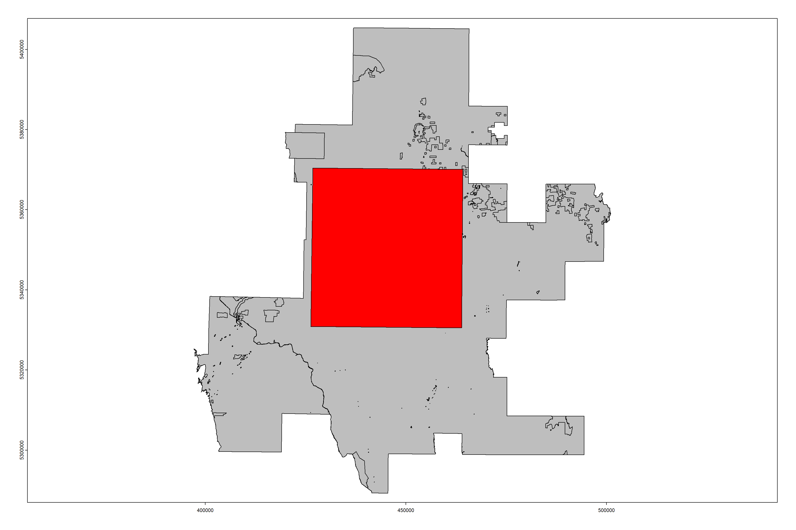
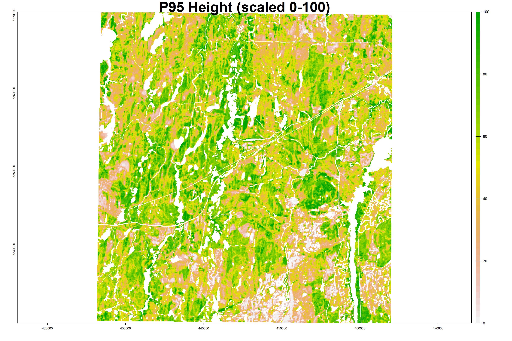
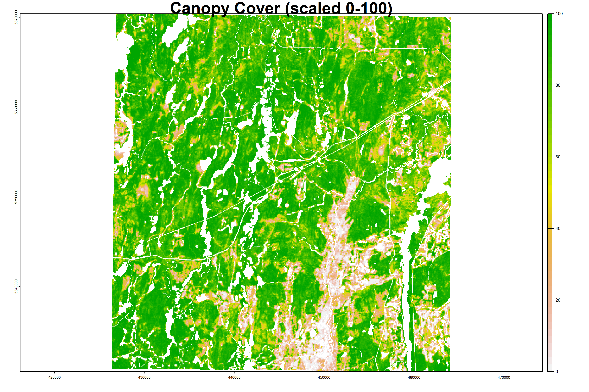
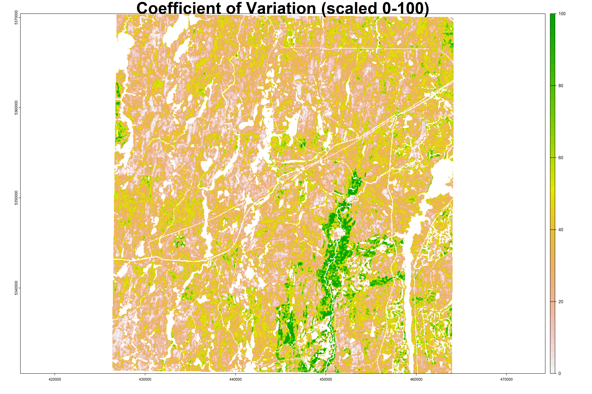
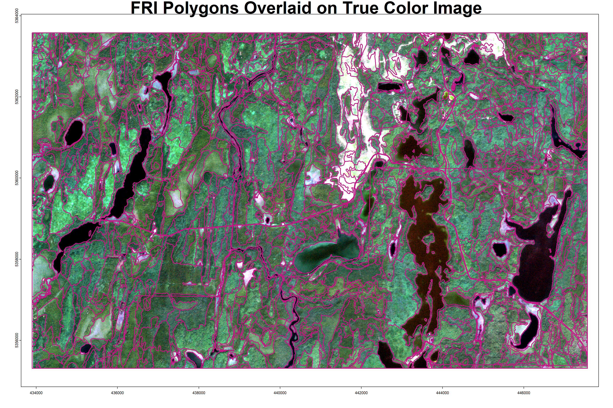
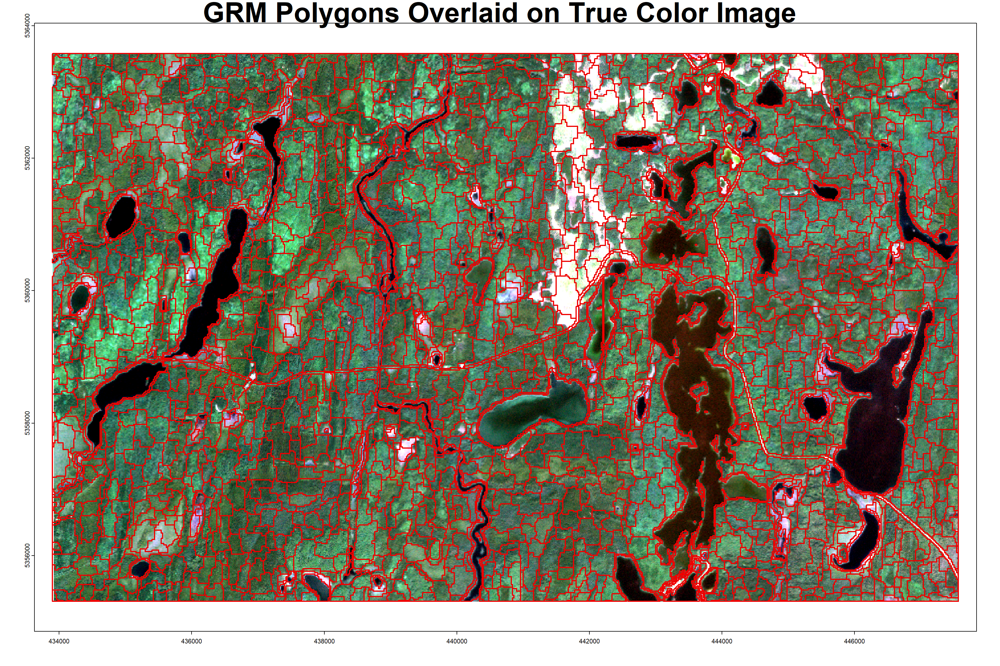
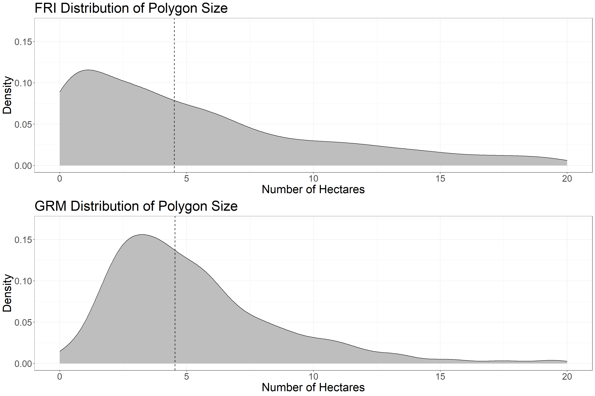
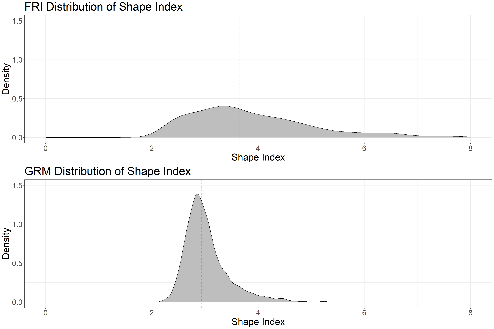

Segmentation Update
Intro
This page provides an update of the segmentation approach used to derive polygons from Airborne Laser Scanning (ALS) gridded summary metrics. Based on feedback from our meetings I have now tested three segmentation algorithms to find the best approach to balance a) the visual component of the segmentation (e.g. shape, overlapping parallel lines) with b) the spectral component (outputting polygons with homogeneous values different from nearby polygons).
The three segmentation algorithms I tested are: 1. Large Scale Mean Shift (showcased in the initial segmentation example) 2. Generic Region Merging 3. Simple Linear Iterative Clustering
This example will run a segmentation of a small area in the Romeo Malette Forest using the Generic Region Merging algorithm, which I found to be the best candidate algorithm for this application. GRM is an open-source region merging algorithm available from Orfeo Toolbox that uses the same segmentation criterion (called the Baatz & Schape criterion) as the subscription based Multi-resolution Segmentation (MRS) from eCognition software, which is the most popular segmentation method for remote sensing applications. I found GRM to be the most appropriate algorithm to derive meaningful and consistent forest stands, due to its ability to easily balance segment shape with spectral homogeneity, an important trade-off to ensure homogeneous forest stands while also maintaining spatial standards needed for forest operations.
First, a three band raster at 20 m spatial resolution is generated from gridded ALS metrics. The three bands comprise P95 height (95th percentile of vegetation return heights above 1.3 m), canopy cover (% cover above 2m) and coefficient of variation (standard deviation of LiDAR return heights divided by mean). I initially used Lorey’s Height instead of P95 height, but am now using P95 height because the two variables are highly correlated (Pearson’s correlation = 0.91) and P95 height provides wall-to-wall coverage within ALS transects whereas Lorey’s Height is modelled for a specific area and only valid within forested landcover types. These bands are re-scaled to comprise values from 0-100, setting the minimum and maximum values to be the 1st and 99th percentile of data observations. Large roads and waterbodies are also masked to prevent them from being included in forest stand polygons. These polygons are re-added to the dataset after segmentation.
Second, the GRM algorithm is used to derive forest stand polygons from the input raster. I am using the algorithm parameters I found to work best after conducting an iterative sensitivity analysis, which is described in the corresponding paper.
Third, the segmentation output is compared to polygons derived from manual interpretation, both visually and with a full suite of summary and performance metrics including:
- Minimum, maximum, mean, and median polygon size (expressed in number of hectares)
- Total number of polygons
- Mean, standard error, and standard deviation of polygon area, perimeter, and shape index
- R2 to assess the performance of segmentation outputs in explaining variation in the input variables: P95 height, canopy cover, and coefficient of variation
1. Create Multi-band Raster
# load packages
library(terra)
library(tidyverse)
library(janitor)
library(sf)
library(exactextractr)
library(lwgeom)
library(magrittr)
library(gridExtra)
###################################################
### LOAD MULTI BAND ALS RASTER FOR SEGMENTATION ###
###################################################
# load file names of SPL rasters to stack
p95 <- 'D:/ontario_inventory/romeo/RMF_EFI_layers/SPL100 metrics/RMF_20m_T130cm_p95.tif'
cc <- 'D:/ontario_inventory/romeo/RMF_EFI_layers/SPL100 metrics/RMF_20m_T130cm_2m_cov.tif'
cv <- 'D:/ontario_inventory/romeo/RMF_EFI_layers/SPL100 metrics/RMF_20m_T130cm_cv.tif'
# stack rasters
spl <- rast(c(p95, cc, cv))
# load RMF shapefile along with sample to be used for example
# reproject to match raster
rmf <- vect('D:/ontario_inventory/romeo/RMF_EFI_layers/Land ownership/RMF_Ownership.shp') %>%
project(., spl)
rmf_samp <- vect('D:/ontario_inventory/romeo/RMF_Sample.shp') %>%
project(., spl)
# plot RMF overlaid with example
plot(rmf, col = 'grey')
plot(rmf_samp, col = 'red', add = T,
main = 'Romeo Malette Forest with Sample Area in Red', cex.main = 3)
# crop raster stack to sample area
spl <- crop(spl, rmf_samp)
# apply smoothing function on 5 cell square
spl[[1]] <- focal(spl[[1]], w=5, fun="mean")
spl[[2]] <- focal(spl[[2]], w=5, fun="mean")
spl[[3]] <- focal(spl[[3]], w=5, fun="mean")
####################################
### MASK ROAD AND WATER POLYGONS ###
####################################
# create spl template with all values equal to 1
spl_temp <- spl[[1]]
spl_temp[] <- 1
# load photo interpreted polygons
poly <- vect('D:/ontario_inventory/romeo/RMF_EFI_layers/Polygons Inventory/RMF_PolygonForest.shp')
# reproject whole FRI to match lidar
poly <- project(poly, spl)
# crop FRI to sample area
poly <- crop(poly, rmf_samp)
# subset polygons that are WAT OR UCL
poly_sub <- poly[poly$POLYTYPE %in% c('WAT', 'UCL')]
# loop through water and unclassified polygons, mask raster, and vectorize
for(i in seq_along(poly_sub)){
pt <- poly_sub$POLYTYPE[i]
if(i == 1){
spl_pt <- spl_temp %>% crop(poly_sub[i], snap = 'out') %>%
mask(poly_sub[i], touches = T)
npix <- sum(values(spl_pt), na.rm = T)
spl_pt <- as.polygons(spl_pt)
names(spl_pt) <- 'POLYTYPE'
spl_pt$POLYTYPE <- pt
spl_pt$nbPixels <- npix
} else{
spl_hold <- spl_temp %>% crop(poly_sub[i], snap = 'out') %>%
mask(poly_sub[i], touches = T)
npix <- sum(values(spl_hold), na.rm = T)
spl_hold <- as.polygons(spl_hold)
names(spl_hold) <- 'POLYTYPE'
spl_hold$POLYTYPE <- pt
spl_hold$nbPixels <- npix
spl_pt <- rbind(spl_pt, spl_hold)
}
}
# mask lidar outside of FRI
spl <- mask(spl, poly, inverse = F, touches = T)
# mask WAT and UCL polygons
spl <- mask(spl, poly_sub, inverse = T, touches = T)
##########################################
### DEAL WITH MISSING DATA AND RESCALE ###
##########################################
# if any band is missing values set all to NA
spl[is.na(spl[[1]])] <- NA
spl[is.na(spl[[2]])] <- NA
spl[is.na(spl[[3]])] <- NA
# create function to rescale values from 0 to 100 using 1 and 99 percentile
scale_100 <- function(x){
# calculate 1st and 99th percentile of input raster
perc <- values(x, mat=F) %>% quantile(., probs=c(0.01, 0.99), na.rm=T)
# rescale raster using 1st and 99th %
x <- (x-perc[1])/(perc[2] - perc[1]) * 100
#reset values below 0 and above 100
x[x < 0] <- 0
x[x > 100] <- 100
return(x)
}
# rescale rasters from 0 to 100
spl[[1]] <- scale_100(spl[[1]])
spl[[2]] <- scale_100(spl[[2]])
spl[[3]] <- scale_100(spl[[3]])
# plot raster layers
plot(spl[[1]])
title(main = "P95 Height (scaled 0-100)", cex.main = 3, line = -0.0001)
plot(spl[[2]])
title(main = "Canopy Cover (scaled 0-100)", cex.main = 3, line = -0.0001)
plot(spl[[3]])
title(main = "Coefficient of Variation (scaled 0-100)", cex.main = 3, line = -0.0001)
# write raster to tif
writeRaster(spl, filename='D:/ontario_inventory/segmentation_ex/spl_stack_grm.tif', overwrite=T)
# write masked water and unclassified polygons to shp
writeVector(spl_pt, 'D:/ontario_inventory/segmentation_ex/wat_ucl_polygons.shp',
overwrite = T)2. Run GRM Segmentation
#########################
### RUN GRM ALGORITHM ###
#########################
# set working directory where temp files will be output
setwd('D:/temp')
# create function to run generic region merging
grm_otb <- function(otb_path = "", raster_in = "", out_path = "", name = "",
method = "bs", thresh = "", spec = "0.5", spat = "0.5"){
# Set configuration
conf <- paste("-in", raster_in, "-out", paste(out_path, "/", name, ".tif", sep=""),
"-criterion", method, "-threshold", thresh, "-cw", spec, "-sw", spat)
# apply function in command line
system(paste(otb_path, "/otbcli_GenericRegionMerging", " ", conf, sep=""))
# save configuration for further use
write.table(x = conf,file = paste(out_path,"/",name,"_conf.txt",sep=""),row.names = F, col.names = F)
}
# run grm
grm_otb(otb_path = "C:/OTB/bin",
raster_in = "D:/ontario_inventory/segmentation_ex/spl_stack_grm.tif",
out_path = "D:/ontario_inventory/segmentation_ex",
name = "grm_ex",
thresh = "10",
spec = "0.1",
spat = "0.5")
###########################
### MASK MISSING VALUES ###
###########################
# load grm segments raster
p <- rast("D:/ontario_inventory/segmentation_ex/grm_ex.tif")
# load single band of raster input for segmentation to use as mask
mask <- rast("D:/ontario_inventory/segmentation_ex/spl_stack_grm.tif") %>% .[[1]]
# mask grm segments raster
p <- mask(p, mask)
# re-write masked grm raster
writeRaster(p, "D:/ontario_inventory/segmentation_ex/grm_ex.tif",
overwrite = T)
##################################################
### CONVERT TO POLYGONS AND CALC POLYGON SIZES ###
##################################################
# convert to vector based on cell value
vec <- as.polygons(p)
# create table of number of pixels in each polygon
num <- as.vector(values(p))
num_pix <- tabyl(num)
# drop na row
num_pix <- na.omit(num_pix)
# get pixel ids from vector
vec_dat <- tibble(id = values(vec)[,1])
colnames(vec_dat) <- 'id'
# loop through values and add to vector data
vec_dat$nbPixels <- NA
for(i in 1:NROW(vec_dat)){
vec_dat$nbPixels[i] <- num_pix$n[num_pix$num == vec_dat$id[i]]
}
# remove current column of data and add id
# add nbPixels to vector
vec <- vec[,-1]
vec$id <- vec_dat$id
vec$nbPixels <- vec_dat$nbPixels3a. Calculate Summary Statistics
##############################################
### RE-ADD WATER AND UNCLASSIFIED POLYGONS ###
##############################################
# load polygon dataset as p
p <- vec
# reproject segmented polygons to ensure same crs as wat and ucl polygons
p <- project(p, spl_pt)
# add WAT/UCL POLYTYPE polygons back in
p <- rbind(p, spl_pt)
#######################################################
### EXTRACT ALS METRICS AND CALCULATE SUMMARY STATS ###
#######################################################
# convert to sf
p_sf <- st_as_sf(p)
# calculate perimeter
p$perim <- st_perimeter(p_sf) %>% as.numeric
# calculate area
p$area <- st_area(p_sf) %>% as.numeric
# calculate mean shape index
p$msi <- p$perim/sqrt(pi * p$area)
# write to file to backup
writeVector(p, "D:/ontario_inventory/segmentation_ex/grm_ex.shp",
overwrite = T)
# subset non masked WAT and UCL polygons
p2_sf <- p[is.na(p$POLYTYPE)] %>% st_as_sf
p2 <- p[is.na(p$POLYTYPE)] %>% as.data.frame
# load original raster input file
ras <- rast("D:/ontario_inventory/segmentation_ex/spl_stack_grm.tif")
# rename bands
names(ras) <- c('p95', 'cc', 'cv')
# extract pixel values
pvals <- exact_extract(ras, p2_sf)
# calculate SSE
sse <- sapply(pvals, FUN = function(x){
p95_mean <- mean(x$p95, na.rm = T)
cc_mean <- mean(x$cc, na.rm = T)
cv_mean <- mean(x$cv, na.rm = T)
return(c(sum((x$p95 - p95_mean)^2, na.rm = T),
sum((x$cc - cc_mean)^2, na.rm = T),
sum((x$cv - cv_mean)^2, na.rm = T)))
})
# transpose
sse <- t(sse)
# calculate final sums
sse <- colSums(sse)
# unlist values
pvals2 <- do.call(rbind, pvals)
# calculate global mean values
p95_mean <- mean(pvals2$p95, na.rm = T)
cc_mean <- mean(pvals2$cc, na.rm = T)
cv_mean <- mean(pvals2$cv, na.rm = T)
rm(pvals2)
# calculate SST
sst <- sapply(pvals, FUN = function(x){
return(c(sum((x$p95 - p95_mean)^2, na.rm = T),
sum((x$cc - cc_mean)^2, na.rm = T),
sum((x$cv - cv_mean)^2, na.rm = T)))
})
# transpose
sst <- t(sst)
# calculate final sums
sst <- colSums(sst)
# calculate r2 values
r2_p95 <- 1 - (sse[1]/sst[1]) %>% round(3)
r2_cc <- 1 - (sse[2]/sst[2]) %>% round(3)
r2_cv <- 1 - (sse[3]/sst[3]) %>% round(3)
r2_all <- (sum(r2_p95, r2_cc, r2_cv) / 3) %>% round(3)
# create standard error function
se <- function(x){sd(x) / sqrt(length(x))}
# create dataframe of all summary stats
df <- data.frame(
alg = 'GRM',
min_pix = (min(p2$nbPixels)),
max_pix = (max(p2$nbPixels)),
mean_pix = (mean(p2$nbPixels)),
med_pix = (median(p2$nbPixels)),
num_poly = NROW(p2),
mean_area = mean(p2$area),
se_area = se(p2$area),
sd_area = sd(p2$area),
mean_perim = mean(p2$perim),
se_perim = se(p2$perim),
sd_perim = sd(p2$perim),
mean_msi = mean(p2$msi),
se_msi = se(p2$msi),
sd_msi = sd(p2$msi),
r2_p95 <- r2_p95,
r2_cc <- r2_cc,
r2_cv <- r2_cv,
r2_all <- r2_all
)
# round numeric columns
df %<>%
mutate_at(c('min_pix',
'max_pix',
'mean_pix',
'med_pix',
'mean_area',
'se_area',
'sd_area',
'mean_perim',
'se_perim',
'sd_perim'),
function(x) round(x, 2)) %>%
mutate_at(c('mean_msi',
'se_msi',
'sd_msi'),
function(x) round(x, 4))
#######################################
### CALCULATE SUMMARY STATS FOR FRI ###
#######################################
# load interpreter derived polygons to extract statistics
p <- poly
# convert to sf
p_sf <- st_as_sf(p)
# calculate perimeter
p$perim <- st_perimeter(p_sf) %>% as.numeric
# calculate area
p$area <- st_area(p_sf) %>% as.numeric
# calculate msi
p$msi <- p$perim/sqrt(pi * p$area)
# calculate nbPixels
p$nbPixels <- p$area / 400
# write to file to backup
writeVector(p,
"D:/ontario_inventory/segmentation_ex/fri_ex.shp",
overwrite = T)
# subset all non water/ucl polygons
p2_sf <- p[!(p$POLYTYPE %in% c('WAT', 'UCL'))] %>% st_as_sf
p2 <- p[!(p$POLYTYPE %in% c('WAT', 'UCL'))] %>% as.data.frame
# extract pixel values
pvals <- exact_extract(ras, p2_sf)
# calculate SSE
sse <- sapply(pvals, FUN = function(x){
# subset values based on coverage fraction
x %<>% filter(coverage_fraction >= 0.5)
p95_mean <- mean(x$p95, na.rm = T)
cc_mean <- mean(x$cc, na.rm = T)
cv_mean <- mean(x$cv, na.rm = T)
return(c(sum((x$p95 - p95_mean)^2, na.rm = T),
sum((x$cc - cc_mean)^2, na.rm = T),
sum((x$cv - cv_mean)^2, na.rm = T)))
})
# transpose
sse <- t(sse)
# calculate final sums
sse <- colSums(sse)
# unlist values
pvals2 <- do.call(rbind, pvals)
# subset values based on coverage fraction
pvals2 %<>% filter(coverage_fraction >= 0.5)
# calculate global mean values
p95_mean <- mean(pvals2$p95, na.rm = T)
cc_mean <- mean(pvals2$cc, na.rm = T)
cv_mean <- mean(pvals2$cv, na.rm = T)
rm(pvals2)
# calculate SST
sst <- sapply(pvals, FUN = function(x){
# subset values based on coverage fraction
x %<>% filter(coverage_fraction >= 0.5)
return(c(sum((x$p95 - p95_mean)^2, na.rm = T),
sum((x$cc - cc_mean)^2, na.rm = T),
sum((x$cv - cv_mean)^2, na.rm = T)))
})
# transpose
sst <- t(sst)
# calculate final sums
sst <- colSums(sst)
# calculate r2 values
r2_p95 <- 1 - (sse[1]/sst[1]) %>% round(3)
r2_cc <- 1 - (sse[2]/sst[2]) %>% round(3)
r2_cv <- 1 - (sse[3]/sst[3]) %>% round(3)
r2_all <- (sum(r2_p95, r2_cc, r2_cv) / 3) %>% round(3)
# create dataframe with values wanted
df_fri <- data.frame(alg = 'FRI',
min_pix = (min(p2$area / 400)),
max_pix = (max(p2$area / 400)),
mean_pix = (mean(p2$area / 400)),
med_pix = (median(p2$area / 400)),
num_poly = NROW(p2),
mean_area = mean(p2$area),
se_area = se(p2$area),
sd_area = sd(p2$area),
mean_perim = mean(p2$perim),
se_perim = se(p2$perim),
sd_perim = sd(p2$perim),
mean_msi = mean(p2$msi),
se_msi = se(p2$msi),
sd_msi = sd(p2$msi),
r2_p95 <- r2_p95,
r2_cc <- r2_cc,
r2_cv <- r2_cv,
r2_all <- r2_all)
# round numeric columns
df_fri %<>%
mutate_at(c('min_pix',
'max_pix',
'mean_pix',
'med_pix'),
function(x) round(x)) %>%
mutate_at(c('mean_area',
'se_area',
'sd_area',
'mean_perim',
'se_perim',
'sd_perim'),
function(x) round(x, 2)) %>%
mutate_at(c('mean_msi',
'se_msi',
'sd_msi'),
function(x) round(x, 4))
# bind df
df <- rbind(df, df_fri)
# write summary stats to csv as backup
write.csv(df,
file = 'D:/ontario_inventory/segmentation_ex/grm_ex_summary_stats.csv',
row.names = F)3b. Compare GRM Segmentation Output to FRI
# load base imagery
base <- rast('D:/ontario_inventory/romeo/RMF_Sample_Base.tif')
# load FRI and change to raster proj
fri_poly <- vect("D:/ontario_inventory/segmentation_ex/fri_ex.shp") %>%
project(., base) %>% crop(., base)
# load GRM polygons and change to raster proj
grm_poly <- vect("D:/ontario_inventory/segmentation_ex/grm_ex.shp") %>%
project(., base) %>% crop(., base)
# plot base imagery with FRI polygons
plot(fri_poly)
plotRGB(base, stretch = 'lin', add = T)
plot(fri_poly, border = 'mediumvioletred', lwd = 2, add = T)
title(main = 'FRI Polygons Overlaid on True Color Image', line = -2, cex.main = 3)
The above plot shows the FRI polygons in the sample area, overlaid on recent true color imagery. Note the clean edges around water bodies, rivers/streams, and road features.
# plot base imagery with GRM polygons
plot(grm_poly)
plotRGB(base, stretch = 'lin', add = T)
plot(grm_poly, border = 'red2', lwd = 2, add = T)
title(main = 'GRM Polygons Overlaid on True Color Image', line = -2, cex.main = 3)
The above plot shows the GRM derived polygons in the sample area. Note that the automated segmentation also has clean edges around water and road features, since these features were masked in the first step, and the polygons re-added after segmentation. The GRM polygons are also much more compact and uniform than the FRI polygons, and generally do not have issues with the line-work (overlapping and parallel lines), which was an important point mentioned in our meetings.
####################################
### DISTRIBUTION OF POLYGON SIZE ###
####################################
# remove wat and ucl polygons and convert to df
fri_poly <- fri_poly[!(fri_poly$POLYTYPE %in% c('WAT', 'UCL'))] %>% as.data.frame
grm_poly <- grm_poly[is.na(grm_poly$POLYTYPE)] %>% as.data.frame
# plot polygon size FRI in Ha
g1 <- ggplot(data.frame(nbPixels = fri_poly$nbPixels/25), aes(x = nbPixels)) +
geom_density(fill = 'grey') +
xlim(c(0, 500/25)) +
ylim(c(0, 0.17)) +
geom_vline(aes(xintercept = median(nbPixels)),
linetype = "dashed",
size = 0.6) +
theme_bw() +
xlab('Number of Hectares') +
ylab('Density') +
ggtitle('FRI Distribution of Polygon Size') +
theme(text = element_text(size = 25))
# plot polygon size GRM in Ha
g2 <- ggplot(data.frame(nbPixels = grm_poly$nbPixels/25), aes(x = nbPixels)) +
geom_density(fill = 'grey') +
xlim(c(0, 500/25)) +
ylim(c(0, 0.17)) +
geom_vline(aes(xintercept = median(nbPixels)),
linetype = "dashed",
size = 0.6) +
theme_bw() +
xlab('Number of Hectares') +
ylab('Density') +
ggtitle('GRM Distribution of Polygon Size') +
theme(text = element_text(size = 25))
# plot together
grid.arrange(g1, g2)
Above is the distribution of polygon size within the sample area. The dotted line denotes the median values, which are very close between the FRI and GRM polygons. Both distributions have a long tail toward large polygons, but the GRM polygons have a more uniform size and less large polygons. Water and Unclassified polygons are not included.
###################################
### DISTRIBUTION OF SHAPE INDEX ###
###################################
# plot shape index FRI
g1 <- ggplot(data.frame(msi = as.numeric(fri_poly$msi)), aes(x = msi)) +
geom_density(fill = 'grey') +
xlim(c(0, 8)) +
ylim(c(0, 1.5)) +
geom_vline(aes(xintercept = median(msi)),
linetype = "dashed",
size = 0.6) +
theme_bw() +
xlab('Shape Index') +
ylab('Density') +
ggtitle('FRI Distribution of Shape Index') +
theme(text = element_text(size = 25))
# plot shape index GRM
g2 <- ggplot(data.frame(msi = as.numeric(grm_poly$msi)), aes(x = msi)) +
geom_density(fill = 'grey') +
xlim(c(0, 8)) +
ylim(c(0, 1.5)) +
geom_vline(aes(xintercept = median(msi)),
linetype = "dashed",
size = 0.6) +
theme_bw() +
xlab('Shape Index') +
ylab('Density') +
ggtitle('GRM Distribution of Shape Index') +
theme(text = element_text(size = 25))
# plot together
grid.arrange(g1, g2)
The above plots show Shape Index for FRI and GRM polygons in the sample area (Water and Unclassified polygons are not included). The dotted line is the median value. Shape Index has a value of 1 for circular objects and increases without limits with increased complexity and irregularity. The GRM polygons have a much more compact shape (lower Shape Index) as well as a more uniform and tight distribution. These characteristics are visible in the above plots of the polygons.
###########################################
### Summary Stats and Additional Tables ###
###########################################
# Size
t1 <- as.tibble(df[, 1:6])
# change to ha
t1[, 2:5] <- round(t1[, 2:5] / 25, 2)
names(t1) <- c('Dataset', "Min Ha", 'Max Ha', "Mean Ha",
"Median Ha", "Number of Polygons")
knitr::kable(t1, caption = "Table 1: Polygon Size Stats", label = NA)| Dataset | Min Ha | Max Ha | Mean Ha | Median Ha | Number of Polygons |
|---|---|---|---|---|---|
| GRM | 0.04 | 42.84 | 4.94 | 4.12 | 25774 |
| FRI | 0.00 | 184.00 | 7.56 | 3.92 | 18202 |
Table 1 shows Polygon size stats. The median values are very close, but the mean GRM polygon size is smaller, as is the maximum polygon size. Thus, the GRM output has more polygons overall than the FRI.
# Area and Perim
t2 <- as.tibble(df[, c(1, 7:12)])
names(t2) <- c("Dataset", "Mean Area (m2)", "SE Area", "SD Area",
"Mean Perimeter (m)", "SE Perimeter", "SD Perimeter")
knitr::kable(t2, caption = "Table 2: Polygon Area and Perimeter Stats", label = NA)| Dataset | Mean Area (m2) | SE Area | SD Area | Mean Perimeter (m) | SE Perimeter | SD Perimeter |
|---|---|---|---|---|---|---|
| GRM | 49366.70 | 209.81 | 33682.75 | 1133.89 | 2.30 | 368.70 |
| FRI | 75643.27 | 830.58 | 112057.39 | 1664.71 | 11.87 | 1600.98 |
Table 2 shows area and perimeter stats. The mean area and perimeter of GRM polygons are smaller than the FRI. The variation is also smaller, since the GRM polygons are more uniform.
# Mean Shape Index
t3 <- as.tibble(df[, c(1, 13:15)])
names(t3) <- c("Dataset", "Mean Shape Index", "SE Shape Index", "SD Shape Index")
knitr::kable(t3, caption = "Table 3: Polygon Shape Index Stats", label = NA)| Dataset | Mean Shape Index | SE Shape Index | SD Shape Index |
|---|---|---|---|
| GRM | 3.0626 | 0.0028 | 0.4501 |
| FRI | 3.8114 | 0.0097 | 1.3145 |
Table 3 presents Mean Shape Index, an indication of the regularity of polygon shape, with values of 1 representing perfect circles and values increasing without maximum with more complexity. We can see that GRM polygons are less complex (more compact) than FRI polygons and that shape varies less in the GRM output.
# R2
t4 <- as.tibble(df[,c(1, 16:19)])
names(t4) <- c('Dataset', 'R2 P95', 'R2 Can Cov', 'R2 Coeff Var', 'R2 Overall')
knitr::kable(t4, caption = "Table 4: Polygon R2 Stats", label = NA)| Dataset | R2 P95 | R2 Can Cov | R2 Coeff Var | R2 Overall |
|---|---|---|---|---|
| GRM | 0.894 | 0.932 | 0.847 | 0.891 |
| FRI | 0.819 | 0.861 | 0.701 | 0.794 |
The last table shows R2 values, which give an indication of how well the segmentation output is explaining the variation among ALS input variables. We can see that the GRM output has a high R2 value of 0.89 (overall R2), which is a strong indicator that the segmentation algorithm is effectively explaining structural differences between polygons. The manually segmented FRI polygons also have a very good R2 value, indicating the skill of interpreters in delineating forest structure.